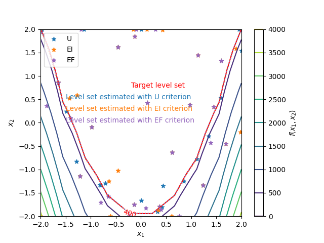

Note
Click here to download the full example code
Acquisition criterion.¶
from __future__ import annotations
import matplotlib.pyplot as plt
from gemseo import configure
from gemseo import configure_logger
from gemseo import sample_disciplines
from gemseo.disciplines.surrogate import SurrogateDiscipline
from gemseo.mlearning.regression.algos.ot_gpr import OTGaussianProcessRegressor
from numpy import unique
from gemseo_mlearning.active_learning.active_learning_algo import ActiveLearningAlgo
from gemseo_mlearning.problems.rosenbrock.rosenbrock_discipline import (
RosenbrockDiscipline,
)
from gemseo_mlearning.problems.rosenbrock.rosenbrock_space import RosenbrockSpace
# Update the configuration of |g| to speed up the script (use configure() with care)
configure(False, False, True, False, False, False, False)
configure_logger()
Out:
<RootLogger root (INFO)>
The use of active learning methods dedicated to level set estimation is illustrated in this example. More specifically, we aim to test here the impact of the choice of the acquisition criterion used to enrich the dataset on the active learning procedure. The function with the level set of interest is the Rosenbrock function \(f(x_1,x_2)=(1-x_1)^2+100(x_2-x_1^2)^2\):
discipline = RosenbrockDiscipline()
with \(x_1\) and \(x_2\) belonging to \([-2,2]^2\):
input_space = RosenbrockSpace()
First, we create an initial training dataset using an optimal LHS including 10 samples:
learning_dataset = sample_disciplines(
[discipline], input_space, "y", algo_name="OT_OPT_LHS", n_samples=10
)
Out:
WARNING - 06:07:02: No coupling in MDA, switching chain_linearize to True.
INFO - 06:07:02: *** Start Sampling execution ***
INFO - 06:07:02: Sampling
INFO - 06:07:02: Disciplines: RosenbrockDiscipline
INFO - 06:07:02: MDO formulation: MDF
INFO - 06:07:02: Running the algorithm OT_OPT_LHS:
INFO - 06:07:02: 10%|█ | 1/10 [00:00<00:00, 3396.20 it/sec]
INFO - 06:07:02: 20%|██ | 2/10 [00:00<00:00, 3445.01 it/sec]
INFO - 06:07:02: 30%|███ | 3/10 [00:00<00:00, 3640.89 it/sec]
INFO - 06:07:02: 40%|████ | 4/10 [00:00<00:00, 3743.24 it/sec]
INFO - 06:07:02: 50%|█████ | 5/10 [00:00<00:00, 3786.84 it/sec]
INFO - 06:07:02: 60%|██████ | 6/10 [00:00<00:00, 3872.26 it/sec]
INFO - 06:07:02: 70%|███████ | 7/10 [00:00<00:00, 3946.78 it/sec]
INFO - 06:07:02: 80%|████████ | 8/10 [00:00<00:00, 3985.56 it/sec]
INFO - 06:07:02: 90%|█████████ | 9/10 [00:00<00:00, 3942.02 it/sec]
INFO - 06:07:02: 100%|██████████| 10/10 [00:00<00:00, 3979.79 it/sec]
INFO - 06:07:02: *** End Sampling execution ***
and three identical initial Gaussian process regressors from OpenTURNS:
regressor_1 = OTGaussianProcessRegressor(learning_dataset, trend="quadratic")
regressor_2 = OTGaussianProcessRegressor(learning_dataset, trend="quadratic")
regressor_3 = OTGaussianProcessRegressor(learning_dataset, trend="quadratic")
Then, we build three active learning algorithms to test the impact of the choice of the acquisition criterion on the active learning procedure. They respectively refer to the U-function (default), EI and EF criteria. All other settings are put to their default values.
value_level = 400
active_learning_1 = ActiveLearningAlgo(
"LevelSet", input_space, regressor_1, output_value=value_level
)
active_learning_2 = ActiveLearningAlgo(
"LevelSet", input_space, regressor_2, output_value=value_level, criterion_name="EI"
)
active_learning_3 = ActiveLearningAlgo(
"LevelSet", input_space, regressor_3, output_value=value_level, criterion_name="EF"
)
active_learning_1.acquire_new_points(discipline, n_samples=20)
active_learning_2.acquire_new_points(discipline, n_samples=20)
active_learning_3.acquire_new_points(discipline, n_samples=20)
Out:
INFO - 06:07:02: Acquiring 20 points in batches of 1
INFO - 06:07:02: 5%|5 | 1/20 [00:00<00:05, 3.31 it/sec]
/builds/gemseo/dev/gemseo-mlearning/src/gemseo_mlearning/active_learning/acquisition_criteria/level_set/u.py:71: RuntimeWarning: divide by zero encountered in divide
abs(self._output_value - self._compute_mean(input_value))
INFO - 06:07:02: 10%|# | 2/20 [00:00<00:05, 3.46 it/sec]
INFO - 06:07:03: 15%|#5 | 3/20 [00:00<00:04, 3.52 it/sec]
INFO - 06:07:03: 20%|## | 4/20 [00:01<00:04, 3.40 it/sec]
/builds/gemseo/dev/gemseo-mlearning/src/gemseo_mlearning/active_learning/acquisition_criteria/level_set/u.py:71: RuntimeWarning: divide by zero encountered in divide
abs(self._output_value - self._compute_mean(input_value))
INFO - 06:07:03: 25%|##5 | 5/20 [00:01<00:04, 3.36 it/sec]
INFO - 06:07:04: 30%|### | 6/20 [00:01<00:04, 3.33 it/sec]
/builds/gemseo/dev/gemseo-mlearning/src/gemseo_mlearning/active_learning/acquisition_criteria/level_set/u.py:71: RuntimeWarning: divide by zero encountered in divide
abs(self._output_value - self._compute_mean(input_value))
INFO - 06:07:04: 35%|###5 | 7/20 [00:02<00:04, 3.31 it/sec]
INFO - 06:07:04: 40%|#### | 8/20 [00:02<00:03, 3.31 it/sec]
INFO - 06:07:05: 45%|####5 | 9/20 [00:02<00:03, 3.30 it/sec]
/builds/gemseo/dev/gemseo-mlearning/src/gemseo_mlearning/active_learning/acquisition_criteria/level_set/u.py:71: RuntimeWarning: divide by zero encountered in divide
abs(self._output_value - self._compute_mean(input_value))
INFO - 06:07:05: 50%|##### | 10/20 [00:03<00:03, 3.29 it/sec]
/builds/gemseo/dev/gemseo-mlearning/src/gemseo_mlearning/active_learning/acquisition_criteria/level_set/u.py:71: RuntimeWarning: divide by zero encountered in divide
abs(self._output_value - self._compute_mean(input_value))
INFO - 06:07:05: 55%|#####5 | 11/20 [00:03<00:02, 3.27 it/sec]
/builds/gemseo/dev/gemseo-mlearning/src/gemseo_mlearning/active_learning/acquisition_criteria/level_set/u.py:71: RuntimeWarning: divide by zero encountered in divide
abs(self._output_value - self._compute_mean(input_value))
INFO - 06:07:06: 60%|###### | 12/20 [00:03<00:02, 3.26 it/sec]
INFO - 06:07:06: 65%|######5 | 13/20 [00:04<00:02, 3.25 it/sec]
INFO - 06:07:06: 70%|####### | 14/20 [00:04<00:01, 3.24 it/sec]
/builds/gemseo/dev/gemseo-mlearning/src/gemseo_mlearning/active_learning/acquisition_criteria/level_set/u.py:71: RuntimeWarning: divide by zero encountered in divide
abs(self._output_value - self._compute_mean(input_value))
INFO - 06:07:06: 75%|#######5 | 15/20 [00:04<00:01, 3.25 it/sec]
INFO - 06:07:07: 80%|######## | 16/20 [00:04<00:01, 3.23 it/sec]
INFO - 06:07:07: 85%|########5 | 17/20 [00:05<00:00, 3.22 it/sec]
/builds/gemseo/dev/gemseo-mlearning/src/gemseo_mlearning/active_learning/acquisition_criteria/level_set/u.py:71: RuntimeWarning: divide by zero encountered in divide
abs(self._output_value - self._compute_mean(input_value))
INFO - 06:07:07: 90%|######### | 18/20 [00:05<00:00, 3.24 it/sec]
INFO - 06:07:08: 95%|#########5| 19/20 [00:05<00:00, 3.26 it/sec]
INFO - 06:07:08: 100%|##########| 20/20 [00:06<00:00, 3.27 it/sec]
INFO - 06:07:08: 100%|##########| 20/20 [00:06<00:00, 3.27 it/sec]
INFO - 06:07:08: Acquiring 20 points in batches of 1
/builds/gemseo/dev/gemseo-mlearning/src/gemseo_mlearning/active_learning/acquisition_criteria/level_set/base_ei_ef.py:82: RuntimeWarning: divide by zero encountered in divide
t = (self._output_value - mean) / standard_deviation
/builds/gemseo/dev/gemseo-mlearning/src/gemseo_mlearning/active_learning/acquisition_criteria/level_set/ei.py:98: RuntimeWarning: invalid value encountered in multiply
(self._kappa**2 - 1 - t**2) * (norm.cdf(t_p) - norm.cdf(t_m))
/builds/gemseo/dev/gemseo-mlearning/src/gemseo_mlearning/active_learning/acquisition_criteria/level_set/ei.py:99: RuntimeWarning: invalid value encountered in multiply
- 2 * t * ((pdf_t_p := norm.pdf(t_p)) - (pdf_t_m := norm.pdf(t_m)))
/builds/gemseo/dev/gemseo-mlearning/src/gemseo_mlearning/active_learning/acquisition_criteria/level_set/ei.py:100: RuntimeWarning: invalid value encountered in multiply
+ t_p * pdf_t_p
/builds/gemseo/dev/gemseo-mlearning/src/gemseo_mlearning/active_learning/acquisition_criteria/level_set/ei.py:101: RuntimeWarning: invalid value encountered in multiply
- t_m * pdf_t_m
INFO - 06:07:08: 10%|# | 2/20 [00:00<00:01, 10.01 it/sec]
/builds/gemseo/dev/gemseo-mlearning/src/gemseo_mlearning/active_learning/acquisition_criteria/level_set/base_ei_ef.py:82: RuntimeWarning: divide by zero encountered in divide
t = (self._output_value - mean) / standard_deviation
/builds/gemseo/dev/gemseo-mlearning/src/gemseo_mlearning/active_learning/acquisition_criteria/level_set/ei.py:98: RuntimeWarning: invalid value encountered in multiply
(self._kappa**2 - 1 - t**2) * (norm.cdf(t_p) - norm.cdf(t_m))
/builds/gemseo/dev/gemseo-mlearning/src/gemseo_mlearning/active_learning/acquisition_criteria/level_set/ei.py:99: RuntimeWarning: invalid value encountered in multiply
- 2 * t * ((pdf_t_p := norm.pdf(t_p)) - (pdf_t_m := norm.pdf(t_m)))
/builds/gemseo/dev/gemseo-mlearning/src/gemseo_mlearning/active_learning/acquisition_criteria/level_set/ei.py:100: RuntimeWarning: invalid value encountered in multiply
+ t_p * pdf_t_p
/builds/gemseo/dev/gemseo-mlearning/src/gemseo_mlearning/active_learning/acquisition_criteria/level_set/ei.py:101: RuntimeWarning: invalid value encountered in multiply
- t_m * pdf_t_m
INFO - 06:07:08: 20%|## | 4/20 [00:00<00:01, 8.78 it/sec]
/builds/gemseo/dev/gemseo-mlearning/src/gemseo_mlearning/active_learning/acquisition_criteria/level_set/base_ei_ef.py:82: RuntimeWarning: divide by zero encountered in divide
t = (self._output_value - mean) / standard_deviation
/builds/gemseo/dev/gemseo-mlearning/src/gemseo_mlearning/active_learning/acquisition_criteria/level_set/ei.py:98: RuntimeWarning: invalid value encountered in multiply
(self._kappa**2 - 1 - t**2) * (norm.cdf(t_p) - norm.cdf(t_m))
/builds/gemseo/dev/gemseo-mlearning/src/gemseo_mlearning/active_learning/acquisition_criteria/level_set/ei.py:99: RuntimeWarning: invalid value encountered in multiply
- 2 * t * ((pdf_t_p := norm.pdf(t_p)) - (pdf_t_m := norm.pdf(t_m)))
/builds/gemseo/dev/gemseo-mlearning/src/gemseo_mlearning/active_learning/acquisition_criteria/level_set/ei.py:100: RuntimeWarning: invalid value encountered in multiply
+ t_p * pdf_t_p
/builds/gemseo/dev/gemseo-mlearning/src/gemseo_mlearning/active_learning/acquisition_criteria/level_set/ei.py:101: RuntimeWarning: invalid value encountered in multiply
- t_m * pdf_t_m
INFO - 06:07:09: 25%|##5 | 5/20 [00:00<00:01, 8.23 it/sec]
/builds/gemseo/dev/gemseo-mlearning/src/gemseo_mlearning/active_learning/acquisition_criteria/level_set/base_ei_ef.py:82: RuntimeWarning: divide by zero encountered in divide
t = (self._output_value - mean) / standard_deviation
/builds/gemseo/dev/gemseo-mlearning/src/gemseo_mlearning/active_learning/acquisition_criteria/level_set/ei.py:98: RuntimeWarning: invalid value encountered in multiply
(self._kappa**2 - 1 - t**2) * (norm.cdf(t_p) - norm.cdf(t_m))
/builds/gemseo/dev/gemseo-mlearning/src/gemseo_mlearning/active_learning/acquisition_criteria/level_set/ei.py:99: RuntimeWarning: invalid value encountered in multiply
- 2 * t * ((pdf_t_p := norm.pdf(t_p)) - (pdf_t_m := norm.pdf(t_m)))
/builds/gemseo/dev/gemseo-mlearning/src/gemseo_mlearning/active_learning/acquisition_criteria/level_set/ei.py:100: RuntimeWarning: invalid value encountered in multiply
+ t_p * pdf_t_p
/builds/gemseo/dev/gemseo-mlearning/src/gemseo_mlearning/active_learning/acquisition_criteria/level_set/ei.py:101: RuntimeWarning: invalid value encountered in multiply
- t_m * pdf_t_m
INFO - 06:07:09: 30%|### | 6/20 [00:00<00:02, 6.94 it/sec]
/builds/gemseo/dev/gemseo-mlearning/src/gemseo_mlearning/active_learning/acquisition_criteria/level_set/base_ei_ef.py:82: RuntimeWarning: divide by zero encountered in divide
t = (self._output_value - mean) / standard_deviation
/builds/gemseo/dev/gemseo-mlearning/src/gemseo_mlearning/active_learning/acquisition_criteria/level_set/ei.py:98: RuntimeWarning: invalid value encountered in multiply
(self._kappa**2 - 1 - t**2) * (norm.cdf(t_p) - norm.cdf(t_m))
/builds/gemseo/dev/gemseo-mlearning/src/gemseo_mlearning/active_learning/acquisition_criteria/level_set/ei.py:99: RuntimeWarning: invalid value encountered in multiply
- 2 * t * ((pdf_t_p := norm.pdf(t_p)) - (pdf_t_m := norm.pdf(t_m)))
/builds/gemseo/dev/gemseo-mlearning/src/gemseo_mlearning/active_learning/acquisition_criteria/level_set/ei.py:100: RuntimeWarning: invalid value encountered in multiply
+ t_p * pdf_t_p
/builds/gemseo/dev/gemseo-mlearning/src/gemseo_mlearning/active_learning/acquisition_criteria/level_set/ei.py:101: RuntimeWarning: invalid value encountered in multiply
- t_m * pdf_t_m
INFO - 06:07:09: 35%|###5 | 7/20 [00:01<00:02, 6.92 it/sec]
/builds/gemseo/dev/gemseo-mlearning/src/gemseo_mlearning/active_learning/acquisition_criteria/level_set/base_ei_ef.py:82: RuntimeWarning: divide by zero encountered in divide
t = (self._output_value - mean) / standard_deviation
/builds/gemseo/dev/gemseo-mlearning/src/gemseo_mlearning/active_learning/acquisition_criteria/level_set/ei.py:98: RuntimeWarning: invalid value encountered in multiply
(self._kappa**2 - 1 - t**2) * (norm.cdf(t_p) - norm.cdf(t_m))
/builds/gemseo/dev/gemseo-mlearning/src/gemseo_mlearning/active_learning/acquisition_criteria/level_set/ei.py:99: RuntimeWarning: invalid value encountered in multiply
- 2 * t * ((pdf_t_p := norm.pdf(t_p)) - (pdf_t_m := norm.pdf(t_m)))
/builds/gemseo/dev/gemseo-mlearning/src/gemseo_mlearning/active_learning/acquisition_criteria/level_set/ei.py:100: RuntimeWarning: invalid value encountered in multiply
+ t_p * pdf_t_p
/builds/gemseo/dev/gemseo-mlearning/src/gemseo_mlearning/active_learning/acquisition_criteria/level_set/ei.py:101: RuntimeWarning: invalid value encountered in multiply
- t_m * pdf_t_m
INFO - 06:07:09: 40%|#### | 8/20 [00:01<00:01, 7.02 it/sec]
/builds/gemseo/dev/gemseo-mlearning/src/gemseo_mlearning/active_learning/acquisition_criteria/level_set/base_ei_ef.py:82: RuntimeWarning: divide by zero encountered in divide
t = (self._output_value - mean) / standard_deviation
/builds/gemseo/dev/gemseo-mlearning/src/gemseo_mlearning/active_learning/acquisition_criteria/level_set/ei.py:98: RuntimeWarning: invalid value encountered in multiply
(self._kappa**2 - 1 - t**2) * (norm.cdf(t_p) - norm.cdf(t_m))
/builds/gemseo/dev/gemseo-mlearning/src/gemseo_mlearning/active_learning/acquisition_criteria/level_set/ei.py:99: RuntimeWarning: invalid value encountered in multiply
- 2 * t * ((pdf_t_p := norm.pdf(t_p)) - (pdf_t_m := norm.pdf(t_m)))
/builds/gemseo/dev/gemseo-mlearning/src/gemseo_mlearning/active_learning/acquisition_criteria/level_set/ei.py:100: RuntimeWarning: invalid value encountered in multiply
+ t_p * pdf_t_p
/builds/gemseo/dev/gemseo-mlearning/src/gemseo_mlearning/active_learning/acquisition_criteria/level_set/ei.py:101: RuntimeWarning: invalid value encountered in multiply
- t_m * pdf_t_m
INFO - 06:07:09: 45%|####5 | 9/20 [00:01<00:02, 6.34 it/sec]
/builds/gemseo/dev/gemseo-mlearning/src/gemseo_mlearning/active_learning/acquisition_criteria/level_set/base_ei_ef.py:82: RuntimeWarning: divide by zero encountered in divide
t = (self._output_value - mean) / standard_deviation
/builds/gemseo/dev/gemseo-mlearning/src/gemseo_mlearning/active_learning/acquisition_criteria/level_set/ei.py:98: RuntimeWarning: invalid value encountered in multiply
(self._kappa**2 - 1 - t**2) * (norm.cdf(t_p) - norm.cdf(t_m))
/builds/gemseo/dev/gemseo-mlearning/src/gemseo_mlearning/active_learning/acquisition_criteria/level_set/ei.py:99: RuntimeWarning: invalid value encountered in multiply
- 2 * t * ((pdf_t_p := norm.pdf(t_p)) - (pdf_t_m := norm.pdf(t_m)))
/builds/gemseo/dev/gemseo-mlearning/src/gemseo_mlearning/active_learning/acquisition_criteria/level_set/ei.py:100: RuntimeWarning: invalid value encountered in multiply
+ t_p * pdf_t_p
/builds/gemseo/dev/gemseo-mlearning/src/gemseo_mlearning/active_learning/acquisition_criteria/level_set/ei.py:101: RuntimeWarning: invalid value encountered in multiply
- t_m * pdf_t_m
INFO - 06:07:10: 50%|##### | 10/20 [00:01<00:02, 5.72 it/sec]
/builds/gemseo/dev/gemseo-mlearning/src/gemseo_mlearning/active_learning/acquisition_criteria/level_set/base_ei_ef.py:82: RuntimeWarning: divide by zero encountered in divide
t = (self._output_value - mean) / standard_deviation
/builds/gemseo/dev/gemseo-mlearning/src/gemseo_mlearning/active_learning/acquisition_criteria/level_set/ei.py:98: RuntimeWarning: invalid value encountered in multiply
(self._kappa**2 - 1 - t**2) * (norm.cdf(t_p) - norm.cdf(t_m))
/builds/gemseo/dev/gemseo-mlearning/src/gemseo_mlearning/active_learning/acquisition_criteria/level_set/ei.py:99: RuntimeWarning: invalid value encountered in multiply
- 2 * t * ((pdf_t_p := norm.pdf(t_p)) - (pdf_t_m := norm.pdf(t_m)))
/builds/gemseo/dev/gemseo-mlearning/src/gemseo_mlearning/active_learning/acquisition_criteria/level_set/ei.py:100: RuntimeWarning: invalid value encountered in multiply
+ t_p * pdf_t_p
/builds/gemseo/dev/gemseo-mlearning/src/gemseo_mlearning/active_learning/acquisition_criteria/level_set/ei.py:101: RuntimeWarning: invalid value encountered in multiply
- t_m * pdf_t_m
INFO - 06:07:10: 55%|#####5 | 11/20 [00:02<00:02, 5.31 it/sec]
/builds/gemseo/dev/gemseo-mlearning/src/gemseo_mlearning/active_learning/acquisition_criteria/level_set/base_ei_ef.py:82: RuntimeWarning: divide by zero encountered in divide
t = (self._output_value - mean) / standard_deviation
/builds/gemseo/dev/gemseo-mlearning/src/gemseo_mlearning/active_learning/acquisition_criteria/level_set/ei.py:98: RuntimeWarning: invalid value encountered in multiply
(self._kappa**2 - 1 - t**2) * (norm.cdf(t_p) - norm.cdf(t_m))
/builds/gemseo/dev/gemseo-mlearning/src/gemseo_mlearning/active_learning/acquisition_criteria/level_set/ei.py:99: RuntimeWarning: invalid value encountered in multiply
- 2 * t * ((pdf_t_p := norm.pdf(t_p)) - (pdf_t_m := norm.pdf(t_m)))
/builds/gemseo/dev/gemseo-mlearning/src/gemseo_mlearning/active_learning/acquisition_criteria/level_set/ei.py:100: RuntimeWarning: invalid value encountered in multiply
+ t_p * pdf_t_p
/builds/gemseo/dev/gemseo-mlearning/src/gemseo_mlearning/active_learning/acquisition_criteria/level_set/ei.py:101: RuntimeWarning: invalid value encountered in multiply
- t_m * pdf_t_m
INFO - 06:07:10: 60%|###### | 12/20 [00:02<00:02, 4.88 it/sec]
/builds/gemseo/dev/gemseo-mlearning/src/gemseo_mlearning/active_learning/acquisition_criteria/level_set/base_ei_ef.py:82: RuntimeWarning: divide by zero encountered in divide
t = (self._output_value - mean) / standard_deviation
/builds/gemseo/dev/gemseo-mlearning/src/gemseo_mlearning/active_learning/acquisition_criteria/level_set/ei.py:98: RuntimeWarning: invalid value encountered in multiply
(self._kappa**2 - 1 - t**2) * (norm.cdf(t_p) - norm.cdf(t_m))
/builds/gemseo/dev/gemseo-mlearning/src/gemseo_mlearning/active_learning/acquisition_criteria/level_set/ei.py:99: RuntimeWarning: invalid value encountered in multiply
- 2 * t * ((pdf_t_p := norm.pdf(t_p)) - (pdf_t_m := norm.pdf(t_m)))
/builds/gemseo/dev/gemseo-mlearning/src/gemseo_mlearning/active_learning/acquisition_criteria/level_set/ei.py:100: RuntimeWarning: invalid value encountered in multiply
+ t_p * pdf_t_p
/builds/gemseo/dev/gemseo-mlearning/src/gemseo_mlearning/active_learning/acquisition_criteria/level_set/ei.py:101: RuntimeWarning: invalid value encountered in multiply
- t_m * pdf_t_m
INFO - 06:07:11: 65%|######5 | 13/20 [00:02<00:02, 4.66 it/sec]
/builds/gemseo/dev/gemseo-mlearning/src/gemseo_mlearning/active_learning/acquisition_criteria/level_set/base_ei_ef.py:82: RuntimeWarning: divide by zero encountered in divide
t = (self._output_value - mean) / standard_deviation
/builds/gemseo/dev/gemseo-mlearning/src/gemseo_mlearning/active_learning/acquisition_criteria/level_set/ei.py:98: RuntimeWarning: invalid value encountered in multiply
(self._kappa**2 - 1 - t**2) * (norm.cdf(t_p) - norm.cdf(t_m))
/builds/gemseo/dev/gemseo-mlearning/src/gemseo_mlearning/active_learning/acquisition_criteria/level_set/ei.py:99: RuntimeWarning: invalid value encountered in multiply
- 2 * t * ((pdf_t_p := norm.pdf(t_p)) - (pdf_t_m := norm.pdf(t_m)))
/builds/gemseo/dev/gemseo-mlearning/src/gemseo_mlearning/active_learning/acquisition_criteria/level_set/ei.py:100: RuntimeWarning: invalid value encountered in multiply
+ t_p * pdf_t_p
/builds/gemseo/dev/gemseo-mlearning/src/gemseo_mlearning/active_learning/acquisition_criteria/level_set/ei.py:101: RuntimeWarning: invalid value encountered in multiply
- t_m * pdf_t_m
INFO - 06:07:11: 70%|####### | 14/20 [00:03<00:01, 4.46 it/sec]
/builds/gemseo/dev/gemseo-mlearning/src/gemseo_mlearning/active_learning/acquisition_criteria/level_set/base_ei_ef.py:82: RuntimeWarning: divide by zero encountered in divide
t = (self._output_value - mean) / standard_deviation
/builds/gemseo/dev/gemseo-mlearning/src/gemseo_mlearning/active_learning/acquisition_criteria/level_set/ei.py:98: RuntimeWarning: invalid value encountered in multiply
(self._kappa**2 - 1 - t**2) * (norm.cdf(t_p) - norm.cdf(t_m))
/builds/gemseo/dev/gemseo-mlearning/src/gemseo_mlearning/active_learning/acquisition_criteria/level_set/ei.py:99: RuntimeWarning: invalid value encountered in multiply
- 2 * t * ((pdf_t_p := norm.pdf(t_p)) - (pdf_t_m := norm.pdf(t_m)))
/builds/gemseo/dev/gemseo-mlearning/src/gemseo_mlearning/active_learning/acquisition_criteria/level_set/ei.py:100: RuntimeWarning: invalid value encountered in multiply
+ t_p * pdf_t_p
/builds/gemseo/dev/gemseo-mlearning/src/gemseo_mlearning/active_learning/acquisition_criteria/level_set/ei.py:101: RuntimeWarning: invalid value encountered in multiply
- t_m * pdf_t_m
INFO - 06:07:11: 75%|#######5 | 15/20 [00:03<00:01, 4.34 it/sec]
/builds/gemseo/dev/gemseo-mlearning/src/gemseo_mlearning/active_learning/acquisition_criteria/level_set/base_ei_ef.py:82: RuntimeWarning: divide by zero encountered in divide
t = (self._output_value - mean) / standard_deviation
/builds/gemseo/dev/gemseo-mlearning/src/gemseo_mlearning/active_learning/acquisition_criteria/level_set/ei.py:98: RuntimeWarning: invalid value encountered in multiply
(self._kappa**2 - 1 - t**2) * (norm.cdf(t_p) - norm.cdf(t_m))
/builds/gemseo/dev/gemseo-mlearning/src/gemseo_mlearning/active_learning/acquisition_criteria/level_set/ei.py:99: RuntimeWarning: invalid value encountered in multiply
- 2 * t * ((pdf_t_p := norm.pdf(t_p)) - (pdf_t_m := norm.pdf(t_m)))
/builds/gemseo/dev/gemseo-mlearning/src/gemseo_mlearning/active_learning/acquisition_criteria/level_set/ei.py:100: RuntimeWarning: invalid value encountered in multiply
+ t_p * pdf_t_p
/builds/gemseo/dev/gemseo-mlearning/src/gemseo_mlearning/active_learning/acquisition_criteria/level_set/ei.py:101: RuntimeWarning: invalid value encountered in multiply
- t_m * pdf_t_m
INFO - 06:07:12: 80%|######## | 16/20 [00:03<00:01, 4.25 it/sec]
INFO - 06:07:12: 85%|########5 | 17/20 [00:04<00:00, 4.13 it/sec]
/builds/gemseo/dev/gemseo-mlearning/src/gemseo_mlearning/active_learning/acquisition_criteria/level_set/base_ei_ef.py:82: RuntimeWarning: divide by zero encountered in divide
t = (self._output_value - mean) / standard_deviation
/builds/gemseo/dev/gemseo-mlearning/src/gemseo_mlearning/active_learning/acquisition_criteria/level_set/ei.py:98: RuntimeWarning: invalid value encountered in multiply
(self._kappa**2 - 1 - t**2) * (norm.cdf(t_p) - norm.cdf(t_m))
/builds/gemseo/dev/gemseo-mlearning/src/gemseo_mlearning/active_learning/acquisition_criteria/level_set/ei.py:99: RuntimeWarning: invalid value encountered in multiply
- 2 * t * ((pdf_t_p := norm.pdf(t_p)) - (pdf_t_m := norm.pdf(t_m)))
/builds/gemseo/dev/gemseo-mlearning/src/gemseo_mlearning/active_learning/acquisition_criteria/level_set/ei.py:100: RuntimeWarning: invalid value encountered in multiply
+ t_p * pdf_t_p
/builds/gemseo/dev/gemseo-mlearning/src/gemseo_mlearning/active_learning/acquisition_criteria/level_set/ei.py:101: RuntimeWarning: invalid value encountered in multiply
- t_m * pdf_t_m
INFO - 06:07:12: 90%|######### | 18/20 [00:04<00:00, 4.01 it/sec]
/builds/gemseo/dev/gemseo-mlearning/src/gemseo_mlearning/active_learning/acquisition_criteria/level_set/base_ei_ef.py:82: RuntimeWarning: divide by zero encountered in divide
t = (self._output_value - mean) / standard_deviation
/builds/gemseo/dev/gemseo-mlearning/src/gemseo_mlearning/active_learning/acquisition_criteria/level_set/ei.py:98: RuntimeWarning: invalid value encountered in multiply
(self._kappa**2 - 1 - t**2) * (norm.cdf(t_p) - norm.cdf(t_m))
/builds/gemseo/dev/gemseo-mlearning/src/gemseo_mlearning/active_learning/acquisition_criteria/level_set/ei.py:99: RuntimeWarning: invalid value encountered in multiply
- 2 * t * ((pdf_t_p := norm.pdf(t_p)) - (pdf_t_m := norm.pdf(t_m)))
/builds/gemseo/dev/gemseo-mlearning/src/gemseo_mlearning/active_learning/acquisition_criteria/level_set/ei.py:100: RuntimeWarning: invalid value encountered in multiply
+ t_p * pdf_t_p
/builds/gemseo/dev/gemseo-mlearning/src/gemseo_mlearning/active_learning/acquisition_criteria/level_set/ei.py:101: RuntimeWarning: invalid value encountered in multiply
- t_m * pdf_t_m
INFO - 06:07:13: 95%|#########5| 19/20 [00:04<00:00, 4.02 it/sec]
INFO - 06:07:13: 100%|##########| 20/20 [00:04<00:00, 4.02 it/sec]
INFO - 06:07:13: 100%|##########| 20/20 [00:04<00:00, 4.02 it/sec]
INFO - 06:07:13: Acquiring 20 points in batches of 1
INFO - 06:07:13: 5%|5 | 1/20 [00:00<00:06, 2.78 it/sec]
/builds/gemseo/dev/gemseo-mlearning/src/gemseo_mlearning/active_learning/acquisition_criteria/level_set/base_ei_ef.py:82: RuntimeWarning: divide by zero encountered in divide
t = (self._output_value - mean) / standard_deviation
/builds/gemseo/dev/gemseo-mlearning/src/gemseo_mlearning/active_learning/acquisition_criteria/level_set/ef.py:100: RuntimeWarning: invalid value encountered in multiply
- t * (2 * norm.cdf(t) - cdf_t_p - cdf_t_m)
INFO - 06:07:14: 10%|# | 2/20 [00:00<00:07, 2.36 it/sec]
INFO - 06:07:14: 15%|#5 | 3/20 [00:01<00:07, 2.23 it/sec]
/builds/gemseo/dev/gemseo-mlearning/src/gemseo_mlearning/active_learning/acquisition_criteria/level_set/base_ei_ef.py:82: RuntimeWarning: divide by zero encountered in divide
t = (self._output_value - mean) / standard_deviation
/builds/gemseo/dev/gemseo-mlearning/src/gemseo_mlearning/active_learning/acquisition_criteria/level_set/ef.py:100: RuntimeWarning: invalid value encountered in multiply
- t * (2 * norm.cdf(t) - cdf_t_p - cdf_t_m)
INFO - 06:07:15: 20%|## | 4/20 [00:01<00:07, 2.19 it/sec]
INFO - 06:07:15: 25%|##5 | 5/20 [00:02<00:07, 2.10 it/sec]
/builds/gemseo/dev/gemseo-mlearning/src/gemseo_mlearning/active_learning/acquisition_criteria/level_set/base_ei_ef.py:82: RuntimeWarning: divide by zero encountered in divide
t = (self._output_value - mean) / standard_deviation
/builds/gemseo/dev/gemseo-mlearning/src/gemseo_mlearning/active_learning/acquisition_criteria/level_set/ef.py:100: RuntimeWarning: invalid value encountered in multiply
- t * (2 * norm.cdf(t) - cdf_t_p - cdf_t_m)
INFO - 06:07:16: 30%|### | 6/20 [00:02<00:06, 2.09 it/sec]
/builds/gemseo/dev/gemseo-mlearning/src/gemseo_mlearning/active_learning/acquisition_criteria/level_set/base_ei_ef.py:82: RuntimeWarning: divide by zero encountered in divide
t = (self._output_value - mean) / standard_deviation
/builds/gemseo/dev/gemseo-mlearning/src/gemseo_mlearning/active_learning/acquisition_criteria/level_set/ef.py:100: RuntimeWarning: invalid value encountered in multiply
- t * (2 * norm.cdf(t) - cdf_t_p - cdf_t_m)
INFO - 06:07:16: 35%|###5 | 7/20 [00:03<00:06, 2.09 it/sec]
INFO - 06:07:17: 40%|#### | 8/20 [00:03<00:05, 2.09 it/sec]
INFO - 06:07:17: 45%|####5 | 9/20 [00:04<00:05, 2.06 it/sec]
INFO - 06:07:18: 50%|##### | 10/20 [00:04<00:04, 2.06 it/sec]
/builds/gemseo/dev/gemseo-mlearning/src/gemseo_mlearning/active_learning/acquisition_criteria/level_set/base_ei_ef.py:82: RuntimeWarning: divide by zero encountered in divide
t = (self._output_value - mean) / standard_deviation
/builds/gemseo/dev/gemseo-mlearning/src/gemseo_mlearning/active_learning/acquisition_criteria/level_set/ef.py:100: RuntimeWarning: invalid value encountered in multiply
- t * (2 * norm.cdf(t) - cdf_t_p - cdf_t_m)
INFO - 06:07:18: 55%|#####5 | 11/20 [00:05<00:04, 2.07 it/sec]
INFO - 06:07:19: 60%|###### | 12/20 [00:05<00:03, 2.08 it/sec]
INFO - 06:07:19: 65%|######5 | 13/20 [00:06<00:03, 2.10 it/sec]
INFO - 06:07:20: 70%|####### | 14/20 [00:06<00:02, 2.13 it/sec]
INFO - 06:07:20: 75%|#######5 | 15/20 [00:06<00:02, 2.16 it/sec]
INFO - 06:07:20: 80%|######## | 16/20 [00:07<00:01, 2.19 it/sec]
INFO - 06:07:21: 85%|########5 | 17/20 [00:07<00:01, 2.24 it/sec]
INFO - 06:07:21: 90%|######### | 18/20 [00:07<00:00, 2.29 it/sec]
INFO - 06:07:21: 95%|#########5| 19/20 [00:08<00:00, 2.35 it/sec]
/builds/gemseo/dev/gemseo-mlearning/src/gemseo_mlearning/active_learning/acquisition_criteria/level_set/base_ei_ef.py:82: RuntimeWarning: divide by zero encountered in divide
t = (self._output_value - mean) / standard_deviation
/builds/gemseo/dev/gemseo-mlearning/src/gemseo_mlearning/active_learning/acquisition_criteria/level_set/ef.py:100: RuntimeWarning: invalid value encountered in multiply
- t * (2 * norm.cdf(t) - cdf_t_p - cdf_t_m)
INFO - 06:07:21: 100%|##########| 20/20 [00:08<00:00, 2.42 it/sec]
INFO - 06:07:21: 100%|##########| 20/20 [00:08<00:00, 2.42 it/sec]
(<gemseo.algos.database.Database object at 0x7eb177d9a730>, Optimization problem:
minimize -EF
with respect to x)
To study the results, for the three active learning algorithms, we plot the training points, the estimated level sets alongside the original model.
# Creation of the grid
# and estimation of the different quantities
n_test = 10
surrogate_1 = SurrogateDiscipline(active_learning_1.regressor)
surrogate_2 = SurrogateDiscipline(active_learning_2.regressor)
surrogate_3 = SurrogateDiscipline(active_learning_3.regressor)
observations = sample_disciplines(
[discipline], input_space, "y", algo_name="OT_FULLFACT", n_samples=n_test**2
).values
observations_gp_1 = sample_disciplines(
[surrogate_1], input_space, "y", algo_name="OT_FULLFACT", n_samples=n_test**2
).values
observations_gp_2 = sample_disciplines(
[surrogate_2], input_space, "y", algo_name="OT_FULLFACT", n_samples=n_test**2
).values
observations_gp_3 = sample_disciplines(
[surrogate_3], input_space, "y", algo_name="OT_FULLFACT", n_samples=n_test**2
).values
# Plotting the contours of the Rosenbrock function
# alongside the learning points
# and the level sets.
plt.figure()
points_1 = active_learning_1.regressor.learning_set.to_numpy()
points_2 = active_learning_2.regressor.learning_set.to_numpy()
points_3 = active_learning_3.regressor.learning_set.to_numpy()
level_set_exact = plt.contour(
unique(observations[:, 0]),
unique(observations[:, 1]),
observations[:, 2].reshape(n_test, n_test),
levels=[value_level],
colors="red",
)
level_set_gp_1 = plt.contour(
unique(observations_gp_1[:, 0]),
unique(observations_gp_1[:, 1]),
observations_gp_1[:, 2].reshape(n_test, n_test),
levels=[value_level],
colors="tab:blue",
linestyles="dotted",
)
level_set_gp_2 = plt.contour(
unique(observations_gp_2[:, 0]),
unique(observations_gp_2[:, 1]),
observations_gp_2[:, 2].reshape(n_test, n_test),
levels=[value_level],
colors="tab:orange",
linestyles="dotted",
)
level_set_gp_3 = plt.contour(
unique(observations_gp_3[:, 0]),
unique(observations_gp_3[:, 1]),
observations_gp_3[:, 2].reshape(n_test, n_test),
levels=[value_level],
colors="tab:purple",
linestyles="dotted",
)
plt.clabel(level_set_exact, levels=[value_level], fontsize=10, colors="red")
plt.annotate("Target level set", (-0.2, 0.75), color="red")
plt.annotate("Level set estimated with U criterion", (-1.5, 0.5), color="tab:blue")
plt.annotate(
"Level set estimated with EI criterion",
(-1.5, 0.25),
color="tab:orange",
)
plt.annotate(
"Level set estimated with EF criterion",
(-1.5, 0),
color="tab:purple",
)
plt.contour(
unique(observations[:, 0]),
unique(observations[:, 1]),
observations[:, 2].reshape(n_test, n_test),
)
bar = plt.colorbar()
bar.set_label(r"$f(x_1,x_2)$")
plt.scatter(points_1[:, 0], points_1[:, 1], marker="*", label="U")
plt.scatter(points_2[:, 0], points_2[:, 1], marker="*", label="EI")
plt.scatter(points_3[:, 0], points_3[:, 1], marker="*", label="EF", color="tab:purple")
plt.xlabel(r"$x_1$")
plt.ylabel(r"$x_2$")
plt.legend()
plt.show()
# As suggests the comparable location
# of their associated learning points,
# the three level sets provide a good
# approximation of the target level set.

Out:
WARNING - 06:07:21: No coupling in MDA, switching chain_linearize to True.
INFO - 06:07:21: *** Start Sampling execution ***
INFO - 06:07:21: Sampling
INFO - 06:07:21: Disciplines: RosenbrockDiscipline
INFO - 06:07:21: MDO formulation: MDF
INFO - 06:07:21: Running the algorithm OT_FULLFACT:
INFO - 06:07:21: 1%| | 1/100 [00:00<00:00, 4108.04 it/sec]
INFO - 06:07:21: 2%|▏ | 2/100 [00:00<00:00, 3878.23 it/sec]
INFO - 06:07:21: 3%|▎ | 3/100 [00:00<00:00, 3864.53 it/sec]
INFO - 06:07:21: 4%|▍ | 4/100 [00:00<00:00, 3960.63 it/sec]
INFO - 06:07:21: 5%|▌ | 5/100 [00:00<00:00, 4032.98 it/sec]
INFO - 06:07:21: 6%|▌ | 6/100 [00:00<00:00, 4075.44 it/sec]
INFO - 06:07:21: 7%|▋ | 7/100 [00:00<00:00, 4004.93 it/sec]
INFO - 06:07:21: 8%|▊ | 8/100 [00:00<00:00, 4016.57 it/sec]
INFO - 06:07:21: 9%|▉ | 9/100 [00:00<00:00, 3905.72 it/sec]
INFO - 06:07:21: 10%|█ | 10/100 [00:00<00:00, 3925.05 it/sec]
INFO - 06:07:21: 11%|█ | 11/100 [00:00<00:00, 3932.94 it/sec]
INFO - 06:07:21: 12%|█▏ | 12/100 [00:00<00:00, 3970.31 it/sec]
INFO - 06:07:21: 13%|█▎ | 13/100 [00:00<00:00, 4006.61 it/sec]
INFO - 06:07:21: 14%|█▍ | 14/100 [00:00<00:00, 4039.09 it/sec]
INFO - 06:07:21: 15%|█▌ | 15/100 [00:00<00:00, 4042.05 it/sec]
INFO - 06:07:21: 16%|█▌ | 16/100 [00:00<00:00, 4064.00 it/sec]
INFO - 06:07:21: 17%|█▋ | 17/100 [00:00<00:00, 4091.77 it/sec]
INFO - 06:07:21: 18%|█▊ | 18/100 [00:00<00:00, 4119.02 it/sec]
INFO - 06:07:21: 19%|█▉ | 19/100 [00:00<00:00, 4131.46 it/sec]
INFO - 06:07:21: 20%|██ | 20/100 [00:00<00:00, 4137.21 it/sec]
INFO - 06:07:21: 21%|██ | 21/100 [00:00<00:00, 4155.13 it/sec]
INFO - 06:07:21: 22%|██▏ | 22/100 [00:00<00:00, 4174.38 it/sec]
INFO - 06:07:21: 23%|██▎ | 23/100 [00:00<00:00, 4192.85 it/sec]
INFO - 06:07:21: 24%|██▍ | 24/100 [00:00<00:00, 4173.96 it/sec]
INFO - 06:07:21: 25%|██▌ | 25/100 [00:00<00:00, 4170.78 it/sec]
INFO - 06:07:21: 26%|██▌ | 26/100 [00:00<00:00, 4181.76 it/sec]
INFO - 06:07:21: 27%|██▋ | 27/100 [00:00<00:00, 4194.93 it/sec]
INFO - 06:07:21: 28%|██▊ | 28/100 [00:00<00:00, 4201.51 it/sec]
INFO - 06:07:21: 29%|██▉ | 29/100 [00:00<00:00, 4193.58 it/sec]
INFO - 06:07:21: 30%|███ | 30/100 [00:00<00:00, 4204.11 it/sec]
INFO - 06:07:21: 31%|███ | 31/100 [00:00<00:00, 4214.83 it/sec]
INFO - 06:07:21: 32%|███▏ | 32/100 [00:00<00:00, 4218.96 it/sec]
INFO - 06:07:21: 33%|███▎ | 33/100 [00:00<00:00, 4217.95 it/sec]
INFO - 06:07:21: 34%|███▍ | 34/100 [00:00<00:00, 4225.00 it/sec]
INFO - 06:07:21: 35%|███▌ | 35/100 [00:00<00:00, 4235.57 it/sec]
INFO - 06:07:21: 36%|███▌ | 36/100 [00:00<00:00, 4242.27 it/sec]
INFO - 06:07:21: 37%|███▋ | 37/100 [00:00<00:00, 4237.13 it/sec]
INFO - 06:07:21: 38%|███▊ | 38/100 [00:00<00:00, 4240.84 it/sec]
INFO - 06:07:21: 39%|███▉ | 39/100 [00:00<00:00, 4249.11 it/sec]
INFO - 06:07:21: 40%|████ | 40/100 [00:00<00:00, 4257.53 it/sec]
INFO - 06:07:21: 41%|████ | 41/100 [00:00<00:00, 4261.45 it/sec]
INFO - 06:07:21: 42%|████▏ | 42/100 [00:00<00:00, 4259.72 it/sec]
INFO - 06:07:21: 43%|████▎ | 43/100 [00:00<00:00, 4264.92 it/sec]
INFO - 06:07:21: 44%|████▍ | 44/100 [00:00<00:00, 4273.06 it/sec]
INFO - 06:07:21: 45%|████▌ | 45/100 [00:00<00:00, 4276.41 it/sec]
INFO - 06:07:21: 46%|████▌ | 46/100 [00:00<00:00, 4273.55 it/sec]
INFO - 06:07:21: 47%|████▋ | 47/100 [00:00<00:00, 4276.10 it/sec]
INFO - 06:07:21: 48%|████▊ | 48/100 [00:00<00:00, 4281.81 it/sec]
INFO - 06:07:21: 49%|████▉ | 49/100 [00:00<00:00, 4284.45 it/sec]
INFO - 06:07:21: 50%|█████ | 50/100 [00:00<00:00, 4282.26 it/sec]
INFO - 06:07:21: 51%|█████ | 51/100 [00:00<00:00, 4278.62 it/sec]
INFO - 06:07:21: 52%|█████▏ | 52/100 [00:00<00:00, 4283.43 it/sec]
INFO - 06:07:21: 53%|█████▎ | 53/100 [00:00<00:00, 4288.65 it/sec]
INFO - 06:07:21: 54%|█████▍ | 54/100 [00:00<00:00, 4287.36 it/sec]
INFO - 06:07:21: 55%|█████▌ | 55/100 [00:00<00:00, 4285.31 it/sec]
INFO - 06:07:21: 56%|█████▌ | 56/100 [00:00<00:00, 4289.05 it/sec]
INFO - 06:07:21: 57%|█████▋ | 57/100 [00:00<00:00, 4293.43 it/sec]
INFO - 06:07:21: 58%|█████▊ | 58/100 [00:00<00:00, 4294.10 it/sec]
INFO - 06:07:21: 59%|█████▉ | 59/100 [00:00<00:00, 4291.26 it/sec]
INFO - 06:07:21: 60%|██████ | 60/100 [00:00<00:00, 4292.75 it/sec]
INFO - 06:07:21: 61%|██████ | 61/100 [00:00<00:00, 4296.50 it/sec]
INFO - 06:07:21: 62%|██████▏ | 62/100 [00:00<00:00, 4298.65 it/sec]
INFO - 06:07:21: 63%|██████▎ | 63/100 [00:00<00:00, 4299.05 it/sec]
INFO - 06:07:21: 64%|██████▍ | 64/100 [00:00<00:00, 4296.75 it/sec]
INFO - 06:07:21: 65%|██████▌ | 65/100 [00:00<00:00, 4300.15 it/sec]
INFO - 06:07:21: 66%|██████▌ | 66/100 [00:00<00:00, 4304.06 it/sec]
INFO - 06:07:21: 67%|██████▋ | 67/100 [00:00<00:00, 4304.42 it/sec]
INFO - 06:07:21: 68%|██████▊ | 68/100 [00:00<00:00, 4299.00 it/sec]
INFO - 06:07:21: 69%|██████▉ | 69/100 [00:00<00:00, 4299.17 it/sec]
INFO - 06:07:21: 70%|███████ | 70/100 [00:00<00:00, 4300.46 it/sec]
INFO - 06:07:21: 71%|███████ | 71/100 [00:00<00:00, 4299.06 it/sec]
INFO - 06:07:21: 72%|███████▏ | 72/100 [00:00<00:00, 4295.36 it/sec]
INFO - 06:07:21: 73%|███████▎ | 73/100 [00:00<00:00, 4297.26 it/sec]
INFO - 06:07:21: 74%|███████▍ | 74/100 [00:00<00:00, 4298.81 it/sec]
INFO - 06:07:21: 75%|███████▌ | 75/100 [00:00<00:00, 4302.32 it/sec]
INFO - 06:07:21: 76%|███████▌ | 76/100 [00:00<00:00, 4302.43 it/sec]
INFO - 06:07:21: 77%|███████▋ | 77/100 [00:00<00:00, 4292.42 it/sec]
INFO - 06:07:21: 78%|███████▊ | 78/100 [00:00<00:00, 4294.40 it/sec]
INFO - 06:07:21: 79%|███████▉ | 79/100 [00:00<00:00, 4295.83 it/sec]
INFO - 06:07:21: 80%|████████ | 80/100 [00:00<00:00, 4296.23 it/sec]
INFO - 06:07:21: 81%|████████ | 81/100 [00:00<00:00, 4294.13 it/sec]
INFO - 06:07:21: 82%|████████▏ | 82/100 [00:00<00:00, 4294.28 it/sec]
INFO - 06:07:21: 83%|████████▎ | 83/100 [00:00<00:00, 4294.26 it/sec]
INFO - 06:07:21: 84%|████████▍ | 84/100 [00:00<00:00, 4292.94 it/sec]
INFO - 06:07:21: 85%|████████▌ | 85/100 [00:00<00:00, 4288.50 it/sec]
INFO - 06:07:21: 86%|████████▌ | 86/100 [00:00<00:00, 4289.27 it/sec]
INFO - 06:07:21: 87%|████████▋ | 87/100 [00:00<00:00, 4291.98 it/sec]
INFO - 06:07:21: 88%|████████▊ | 88/100 [00:00<00:00, 4294.49 it/sec]
INFO - 06:07:21: 89%|████████▉ | 89/100 [00:00<00:00, 4289.05 it/sec]
INFO - 06:07:21: 90%|█████████ | 90/100 [00:00<00:00, 4289.97 it/sec]
INFO - 06:07:21: 91%|█████████ | 91/100 [00:00<00:00, 4292.61 it/sec]
INFO - 06:07:21: 92%|█████████▏| 92/100 [00:00<00:00, 4295.53 it/sec]
INFO - 06:07:21: 93%|█████████▎| 93/100 [00:00<00:00, 4296.26 it/sec]
INFO - 06:07:21: 94%|█████████▍| 94/100 [00:00<00:00, 4295.43 it/sec]
INFO - 06:07:21: 95%|█████████▌| 95/100 [00:00<00:00, 4298.37 it/sec]
INFO - 06:07:21: 96%|█████████▌| 96/100 [00:00<00:00, 4301.16 it/sec]
INFO - 06:07:21: 97%|█████████▋| 97/100 [00:00<00:00, 4302.17 it/sec]
INFO - 06:07:21: 98%|█████████▊| 98/100 [00:00<00:00, 4299.11 it/sec]
INFO - 06:07:21: 99%|█████████▉| 99/100 [00:00<00:00, 4301.54 it/sec]
INFO - 06:07:21: 100%|██████████| 100/100 [00:00<00:00, 4303.00 it/sec]
INFO - 06:07:21: *** End Sampling execution ***
WARNING - 06:07:21: No coupling in MDA, switching chain_linearize to True.
INFO - 06:07:21: *** Start Sampling execution ***
INFO - 06:07:21: Sampling
INFO - 06:07:21: Disciplines: GPR_IODataset
INFO - 06:07:21: MDO formulation: MDF
INFO - 06:07:21: Running the algorithm OT_FULLFACT:
INFO - 06:07:21: 1%| | 1/100 [00:00<00:00, 820.80 it/sec]
INFO - 06:07:21: 2%|▏ | 2/100 [00:00<00:00, 832.53 it/sec]
INFO - 06:07:21: 3%|▎ | 3/100 [00:00<00:00, 821.88 it/sec]
INFO - 06:07:21: 4%|▍ | 4/100 [00:00<00:00, 825.81 it/sec]
INFO - 06:07:21: 5%|▌ | 5/100 [00:00<00:00, 830.72 it/sec]
INFO - 06:07:21: 6%|▌ | 6/100 [00:00<00:00, 835.82 it/sec]
INFO - 06:07:21: 7%|▋ | 7/100 [00:00<00:00, 837.86 it/sec]
INFO - 06:07:21: 8%|▊ | 8/100 [00:00<00:00, 840.58 it/sec]
INFO - 06:07:21: 9%|▉ | 9/100 [00:00<00:00, 842.30 it/sec]
INFO - 06:07:21: 10%|█ | 10/100 [00:00<00:00, 847.27 it/sec]
INFO - 06:07:21: 11%|█ | 11/100 [00:00<00:00, 850.33 it/sec]
INFO - 06:07:21: 12%|█▏ | 12/100 [00:00<00:00, 853.60 it/sec]
INFO - 06:07:21: 13%|█▎ | 13/100 [00:00<00:00, 852.93 it/sec]
INFO - 06:07:21: 14%|█▍ | 14/100 [00:00<00:00, 854.16 it/sec]
INFO - 06:07:21: 15%|█▌ | 15/100 [00:00<00:00, 856.71 it/sec]
INFO - 06:07:21: 16%|█▌ | 16/100 [00:00<00:00, 859.15 it/sec]
INFO - 06:07:21: 17%|█▋ | 17/100 [00:00<00:00, 861.50 it/sec]
INFO - 06:07:21: 18%|█▊ | 18/100 [00:00<00:00, 863.53 it/sec]
INFO - 06:07:21: 19%|█▉ | 19/100 [00:00<00:00, 865.07 it/sec]
INFO - 06:07:21: 20%|██ | 20/100 [00:00<00:00, 865.79 it/sec]
INFO - 06:07:21: 21%|██ | 21/100 [00:00<00:00, 866.93 it/sec]
INFO - 06:07:21: 22%|██▏ | 22/100 [00:00<00:00, 867.87 it/sec]
INFO - 06:07:21: 23%|██▎ | 23/100 [00:00<00:00, 868.48 it/sec]
INFO - 06:07:21: 24%|██▍ | 24/100 [00:00<00:00, 869.41 it/sec]
INFO - 06:07:21: 25%|██▌ | 25/100 [00:00<00:00, 870.57 it/sec]
INFO - 06:07:21: 26%|██▌ | 26/100 [00:00<00:00, 871.77 it/sec]
INFO - 06:07:21: 27%|██▋ | 27/100 [00:00<00:00, 872.45 it/sec]
INFO - 06:07:21: 28%|██▊ | 28/100 [00:00<00:00, 872.83 it/sec]
INFO - 06:07:21: 29%|██▉ | 29/100 [00:00<00:00, 873.22 it/sec]
INFO - 06:07:21: 30%|███ | 30/100 [00:00<00:00, 873.83 it/sec]
INFO - 06:07:21: 31%|███ | 31/100 [00:00<00:00, 874.70 it/sec]
INFO - 06:07:21: 32%|███▏ | 32/100 [00:00<00:00, 874.83 it/sec]
INFO - 06:07:21: 33%|███▎ | 33/100 [00:00<00:00, 875.38 it/sec]
INFO - 06:07:21: 34%|███▍ | 34/100 [00:00<00:00, 875.80 it/sec]
INFO - 06:07:21: 35%|███▌ | 35/100 [00:00<00:00, 876.06 it/sec]
INFO - 06:07:21: 36%|███▌ | 36/100 [00:00<00:00, 876.22 it/sec]
INFO - 06:07:21: 37%|███▋ | 37/100 [00:00<00:00, 876.65 it/sec]
INFO - 06:07:21: 38%|███▊ | 38/100 [00:00<00:00, 877.09 it/sec]
INFO - 06:07:21: 39%|███▉ | 39/100 [00:00<00:00, 877.51 it/sec]
INFO - 06:07:21: 40%|████ | 40/100 [00:00<00:00, 877.77 it/sec]
INFO - 06:07:21: 41%|████ | 41/100 [00:00<00:00, 878.00 it/sec]
INFO - 06:07:21: 42%|████▏ | 42/100 [00:00<00:00, 877.54 it/sec]
INFO - 06:07:21: 43%|████▎ | 43/100 [00:00<00:00, 877.74 it/sec]
INFO - 06:07:21: 44%|████▍ | 44/100 [00:00<00:00, 878.14 it/sec]
INFO - 06:07:21: 45%|████▌ | 45/100 [00:00<00:00, 878.56 it/sec]
INFO - 06:07:21: 46%|████▌ | 46/100 [00:00<00:00, 879.00 it/sec]
INFO - 06:07:21: 47%|████▋ | 47/100 [00:00<00:00, 879.65 it/sec]
INFO - 06:07:21: 48%|████▊ | 48/100 [00:00<00:00, 880.29 it/sec]
INFO - 06:07:21: 49%|████▉ | 49/100 [00:00<00:00, 880.96 it/sec]
INFO - 06:07:21: 50%|█████ | 50/100 [00:00<00:00, 881.00 it/sec]
INFO - 06:07:21: 51%|█████ | 51/100 [00:00<00:00, 881.54 it/sec]
INFO - 06:07:21: 52%|█████▏ | 52/100 [00:00<00:00, 881.74 it/sec]
INFO - 06:07:21: 53%|█████▎ | 53/100 [00:00<00:00, 882.01 it/sec]
INFO - 06:07:21: 54%|█████▍ | 54/100 [00:00<00:00, 882.27 it/sec]
INFO - 06:07:21: 55%|█████▌ | 55/100 [00:00<00:00, 882.45 it/sec]
INFO - 06:07:21: 56%|█████▌ | 56/100 [00:00<00:00, 882.85 it/sec]
INFO - 06:07:21: 57%|█████▋ | 57/100 [00:00<00:00, 883.18 it/sec]
INFO - 06:07:21: 58%|█████▊ | 58/100 [00:00<00:00, 883.59 it/sec]
INFO - 06:07:21: 59%|█████▉ | 59/100 [00:00<00:00, 883.97 it/sec]
INFO - 06:07:21: 60%|██████ | 60/100 [00:00<00:00, 884.40 it/sec]
INFO - 06:07:21: 61%|██████ | 61/100 [00:00<00:00, 884.31 it/sec]
INFO - 06:07:21: 62%|██████▏ | 62/100 [00:00<00:00, 884.29 it/sec]
INFO - 06:07:21: 63%|██████▎ | 63/100 [00:00<00:00, 884.60 it/sec]
INFO - 06:07:21: 64%|██████▍ | 64/100 [00:00<00:00, 884.82 it/sec]
INFO - 06:07:21: 65%|██████▌ | 65/100 [00:00<00:00, 885.05 it/sec]
INFO - 06:07:21: 66%|██████▌ | 66/100 [00:00<00:00, 885.13 it/sec]
INFO - 06:07:21: 67%|██████▋ | 67/100 [00:00<00:00, 885.31 it/sec]
INFO - 06:07:21: 68%|██████▊ | 68/100 [00:00<00:00, 885.17 it/sec]
INFO - 06:07:21: 69%|██████▉ | 69/100 [00:00<00:00, 885.32 it/sec]
INFO - 06:07:21: 70%|███████ | 70/100 [00:00<00:00, 885.57 it/sec]
INFO - 06:07:21: 71%|███████ | 71/100 [00:00<00:00, 885.63 it/sec]
INFO - 06:07:21: 72%|███████▏ | 72/100 [00:00<00:00, 885.61 it/sec]
INFO - 06:07:21: 73%|███████▎ | 73/100 [00:00<00:00, 885.67 it/sec]
INFO - 06:07:21: 74%|███████▍ | 74/100 [00:00<00:00, 885.22 it/sec]
INFO - 06:07:21: 75%|███████▌ | 75/100 [00:00<00:00, 885.40 it/sec]
INFO - 06:07:21: 76%|███████▌ | 76/100 [00:00<00:00, 885.65 it/sec]
INFO - 06:07:21: 77%|███████▋ | 77/100 [00:00<00:00, 885.79 it/sec]
INFO - 06:07:21: 78%|███████▊ | 78/100 [00:00<00:00, 886.00 it/sec]
INFO - 06:07:21: 79%|███████▉ | 79/100 [00:00<00:00, 885.87 it/sec]
INFO - 06:07:21: 80%|████████ | 80/100 [00:00<00:00, 885.93 it/sec]
INFO - 06:07:21: 81%|████████ | 81/100 [00:00<00:00, 885.94 it/sec]
INFO - 06:07:21: 82%|████████▏ | 82/100 [00:00<00:00, 886.00 it/sec]
INFO - 06:07:21: 83%|████████▎ | 83/100 [00:00<00:00, 886.01 it/sec]
INFO - 06:07:21: 84%|████████▍ | 84/100 [00:00<00:00, 886.03 it/sec]
INFO - 06:07:21: 85%|████████▌ | 85/100 [00:00<00:00, 886.06 it/sec]
INFO - 06:07:21: 86%|████████▌ | 86/100 [00:00<00:00, 886.12 it/sec]
INFO - 06:07:21: 87%|████████▋ | 87/100 [00:00<00:00, 886.14 it/sec]
INFO - 06:07:21: 88%|████████▊ | 88/100 [00:00<00:00, 886.18 it/sec]
INFO - 06:07:21: 89%|████████▉ | 89/100 [00:00<00:00, 886.28 it/sec]
INFO - 06:07:21: 90%|█████████ | 90/100 [00:00<00:00, 886.50 it/sec]
INFO - 06:07:21: 91%|█████████ | 91/100 [00:00<00:00, 886.75 it/sec]
INFO - 06:07:21: 92%|█████████▏| 92/100 [00:00<00:00, 887.04 it/sec]
INFO - 06:07:21: 93%|█████████▎| 93/100 [00:00<00:00, 887.13 it/sec]
INFO - 06:07:21: 94%|█████████▍| 94/100 [00:00<00:00, 887.13 it/sec]
INFO - 06:07:21: 95%|█████████▌| 95/100 [00:00<00:00, 887.21 it/sec]
INFO - 06:07:21: 96%|█████████▌| 96/100 [00:00<00:00, 887.20 it/sec]
INFO - 06:07:21: 97%|█████████▋| 97/100 [00:00<00:00, 887.29 it/sec]
INFO - 06:07:21: 98%|█████████▊| 98/100 [00:00<00:00, 887.37 it/sec]
INFO - 06:07:21: 99%|█████████▉| 99/100 [00:00<00:00, 887.51 it/sec]
INFO - 06:07:21: 100%|██████████| 100/100 [00:00<00:00, 887.64 it/sec]
INFO - 06:07:21: *** End Sampling execution ***
WARNING - 06:07:21: No coupling in MDA, switching chain_linearize to True.
INFO - 06:07:21: *** Start Sampling execution ***
INFO - 06:07:21: Sampling
INFO - 06:07:21: Disciplines: GPR_IODataset
INFO - 06:07:21: MDO formulation: MDF
INFO - 06:07:21: Running the algorithm OT_FULLFACT:
INFO - 06:07:21: 1%| | 1/100 [00:00<00:00, 840.04 it/sec]
INFO - 06:07:21: 2%|▏ | 2/100 [00:00<00:00, 827.52 it/sec]
INFO - 06:07:21: 3%|▎ | 3/100 [00:00<00:00, 574.01 it/sec]
INFO - 06:07:21: 4%|▍ | 4/100 [00:00<00:00, 611.95 it/sec]
INFO - 06:07:21: 5%|▌ | 5/100 [00:00<00:00, 647.21 it/sec]
INFO - 06:07:21: 6%|▌ | 6/100 [00:00<00:00, 676.32 it/sec]
INFO - 06:07:21: 7%|▋ | 7/100 [00:00<00:00, 697.36 it/sec]
INFO - 06:07:21: 8%|▊ | 8/100 [00:00<00:00, 712.98 it/sec]
INFO - 06:07:21: 9%|▉ | 9/100 [00:00<00:00, 721.64 it/sec]
INFO - 06:07:21: 10%|█ | 10/100 [00:00<00:00, 734.04 it/sec]
INFO - 06:07:21: 11%|█ | 11/100 [00:00<00:00, 744.81 it/sec]
INFO - 06:07:21: 12%|█▏ | 12/100 [00:00<00:00, 753.69 it/sec]
INFO - 06:07:21: 13%|█▎ | 13/100 [00:00<00:00, 761.45 it/sec]
INFO - 06:07:21: 14%|█▍ | 14/100 [00:00<00:00, 768.91 it/sec]
INFO - 06:07:21: 15%|█▌ | 15/100 [00:00<00:00, 775.22 it/sec]
INFO - 06:07:21: 16%|█▌ | 16/100 [00:00<00:00, 780.97 it/sec]
INFO - 06:07:21: 17%|█▋ | 17/100 [00:00<00:00, 786.64 it/sec]
INFO - 06:07:21: 18%|█▊ | 18/100 [00:00<00:00, 791.51 it/sec]
INFO - 06:07:21: 19%|█▉ | 19/100 [00:00<00:00, 794.96 it/sec]
INFO - 06:07:21: 20%|██ | 20/100 [00:00<00:00, 799.30 it/sec]
INFO - 06:07:21: 21%|██ | 21/100 [00:00<00:00, 802.95 it/sec]
INFO - 06:07:21: 22%|██▏ | 22/100 [00:00<00:00, 805.59 it/sec]
INFO - 06:07:21: 23%|██▎ | 23/100 [00:00<00:00, 808.58 it/sec]
INFO - 06:07:21: 24%|██▍ | 24/100 [00:00<00:00, 811.11 it/sec]
INFO - 06:07:21: 25%|██▌ | 25/100 [00:00<00:00, 814.05 it/sec]
INFO - 06:07:21: 26%|██▌ | 26/100 [00:00<00:00, 816.59 it/sec]
INFO - 06:07:21: 27%|██▋ | 27/100 [00:00<00:00, 819.44 it/sec]
INFO - 06:07:21: 28%|██▊ | 28/100 [00:00<00:00, 821.77 it/sec]
INFO - 06:07:21: 29%|██▉ | 29/100 [00:00<00:00, 824.03 it/sec]
INFO - 06:07:21: 30%|███ | 30/100 [00:00<00:00, 824.84 it/sec]
INFO - 06:07:21: 31%|███ | 31/100 [00:00<00:00, 827.01 it/sec]
INFO - 06:07:21: 32%|███▏ | 32/100 [00:00<00:00, 827.58 it/sec]
INFO - 06:07:21: 33%|███▎ | 33/100 [00:00<00:00, 829.12 it/sec]
INFO - 06:07:21: 34%|███▍ | 34/100 [00:00<00:00, 830.60 it/sec]
INFO - 06:07:21: 35%|███▌ | 35/100 [00:00<00:00, 831.85 it/sec]
INFO - 06:07:21: 36%|███▌ | 36/100 [00:00<00:00, 833.30 it/sec]
INFO - 06:07:21: 37%|███▋ | 37/100 [00:00<00:00, 834.18 it/sec]
INFO - 06:07:21: 38%|███▊ | 38/100 [00:00<00:00, 835.30 it/sec]
INFO - 06:07:21: 39%|███▉ | 39/100 [00:00<00:00, 836.45 it/sec]
INFO - 06:07:21: 40%|████ | 40/100 [00:00<00:00, 837.24 it/sec]
INFO - 06:07:22: 41%|████ | 41/100 [00:00<00:00, 838.21 it/sec]
INFO - 06:07:22: 42%|████▏ | 42/100 [00:00<00:00, 839.25 it/sec]
INFO - 06:07:22: 43%|████▎ | 43/100 [00:00<00:00, 839.90 it/sec]
INFO - 06:07:22: 44%|████▍ | 44/100 [00:00<00:00, 840.35 it/sec]
INFO - 06:07:22: 45%|████▌ | 45/100 [00:00<00:00, 840.94 it/sec]
INFO - 06:07:22: 46%|████▌ | 46/100 [00:00<00:00, 841.83 it/sec]
INFO - 06:07:22: 47%|████▋ | 47/100 [00:00<00:00, 842.77 it/sec]
INFO - 06:07:22: 48%|████▊ | 48/100 [00:00<00:00, 843.75 it/sec]
INFO - 06:07:22: 49%|████▉ | 49/100 [00:00<00:00, 844.48 it/sec]
INFO - 06:07:22: 50%|█████ | 50/100 [00:00<00:00, 845.00 it/sec]
INFO - 06:07:22: 51%|█████ | 51/100 [00:00<00:00, 845.49 it/sec]
INFO - 06:07:22: 52%|█████▏ | 52/100 [00:00<00:00, 846.20 it/sec]
INFO - 06:07:22: 53%|█████▎ | 53/100 [00:00<00:00, 846.78 it/sec]
INFO - 06:07:22: 54%|█████▍ | 54/100 [00:00<00:00, 847.23 it/sec]
INFO - 06:07:22: 55%|█████▌ | 55/100 [00:00<00:00, 847.91 it/sec]
INFO - 06:07:22: 56%|█████▌ | 56/100 [00:00<00:00, 848.56 it/sec]
INFO - 06:07:22: 57%|█████▋ | 57/100 [00:00<00:00, 848.92 it/sec]
INFO - 06:07:22: 58%|█████▊ | 58/100 [00:00<00:00, 849.45 it/sec]
INFO - 06:07:22: 59%|█████▉ | 59/100 [00:00<00:00, 849.94 it/sec]
INFO - 06:07:22: 60%|██████ | 60/100 [00:00<00:00, 850.43 it/sec]
INFO - 06:07:22: 61%|██████ | 61/100 [00:00<00:00, 850.67 it/sec]
INFO - 06:07:22: 62%|██████▏ | 62/100 [00:00<00:00, 851.31 it/sec]
INFO - 06:07:22: 63%|██████▎ | 63/100 [00:00<00:00, 851.94 it/sec]
INFO - 06:07:22: 64%|██████▍ | 64/100 [00:00<00:00, 852.42 it/sec]
INFO - 06:07:22: 65%|██████▌ | 65/100 [00:00<00:00, 852.96 it/sec]
INFO - 06:07:22: 66%|██████▌ | 66/100 [00:00<00:00, 853.21 it/sec]
INFO - 06:07:22: 67%|██████▋ | 67/100 [00:00<00:00, 853.81 it/sec]
INFO - 06:07:22: 68%|██████▊ | 68/100 [00:00<00:00, 853.37 it/sec]
INFO - 06:07:22: 69%|██████▉ | 69/100 [00:00<00:00, 853.63 it/sec]
INFO - 06:07:22: 70%|███████ | 70/100 [00:00<00:00, 853.97 it/sec]
INFO - 06:07:22: 71%|███████ | 71/100 [00:00<00:00, 854.17 it/sec]
INFO - 06:07:22: 72%|███████▏ | 72/100 [00:00<00:00, 854.46 it/sec]
INFO - 06:07:22: 73%|███████▎ | 73/100 [00:00<00:00, 854.85 it/sec]
INFO - 06:07:22: 74%|███████▍ | 74/100 [00:00<00:00, 855.16 it/sec]
INFO - 06:07:22: 75%|███████▌ | 75/100 [00:00<00:00, 854.61 it/sec]
INFO - 06:07:22: 76%|███████▌ | 76/100 [00:00<00:00, 854.96 it/sec]
INFO - 06:07:22: 77%|███████▋ | 77/100 [00:00<00:00, 855.32 it/sec]
INFO - 06:07:22: 78%|███████▊ | 78/100 [00:00<00:00, 855.51 it/sec]
INFO - 06:07:22: 79%|███████▉ | 79/100 [00:00<00:00, 855.62 it/sec]
INFO - 06:07:22: 80%|████████ | 80/100 [00:00<00:00, 854.75 it/sec]
INFO - 06:07:22: 81%|████████ | 81/100 [00:00<00:00, 853.52 it/sec]
INFO - 06:07:22: 82%|████████▏ | 82/100 [00:00<00:00, 853.72 it/sec]
INFO - 06:07:22: 83%|████████▎ | 83/100 [00:00<00:00, 854.02 it/sec]
INFO - 06:07:22: 84%|████████▍ | 84/100 [00:00<00:00, 854.11 it/sec]
INFO - 06:07:22: 85%|████████▌ | 85/100 [00:00<00:00, 854.34 it/sec]
INFO - 06:07:22: 86%|████████▌ | 86/100 [00:00<00:00, 854.64 it/sec]
INFO - 06:07:22: 87%|████████▋ | 87/100 [00:00<00:00, 854.94 it/sec]
INFO - 06:07:22: 88%|████████▊ | 88/100 [00:00<00:00, 855.25 it/sec]
INFO - 06:07:22: 89%|████████▉ | 89/100 [00:00<00:00, 855.54 it/sec]
INFO - 06:07:22: 90%|█████████ | 90/100 [00:00<00:00, 855.17 it/sec]
INFO - 06:07:22: 91%|█████████ | 91/100 [00:00<00:00, 855.02 it/sec]
INFO - 06:07:22: 92%|█████████▏| 92/100 [00:00<00:00, 855.00 it/sec]
INFO - 06:07:22: 93%|█████████▎| 93/100 [00:00<00:00, 855.31 it/sec]
INFO - 06:07:22: 94%|█████████▍| 94/100 [00:00<00:00, 855.57 it/sec]
INFO - 06:07:22: 95%|█████████▌| 95/100 [00:00<00:00, 855.75 it/sec]
INFO - 06:07:22: 96%|█████████▌| 96/100 [00:00<00:00, 855.91 it/sec]
INFO - 06:07:22: 97%|█████████▋| 97/100 [00:00<00:00, 855.75 it/sec]
INFO - 06:07:22: 98%|█████████▊| 98/100 [00:00<00:00, 855.88 it/sec]
INFO - 06:07:22: 99%|█████████▉| 99/100 [00:00<00:00, 856.11 it/sec]
INFO - 06:07:22: 100%|██████████| 100/100 [00:00<00:00, 856.34 it/sec]
INFO - 06:07:22: *** End Sampling execution ***
WARNING - 06:07:22: No coupling in MDA, switching chain_linearize to True.
INFO - 06:07:22: *** Start Sampling execution ***
INFO - 06:07:22: Sampling
INFO - 06:07:22: Disciplines: GPR_IODataset
INFO - 06:07:22: MDO formulation: MDF
INFO - 06:07:22: Running the algorithm OT_FULLFACT:
INFO - 06:07:22: 1%| | 1/100 [00:00<00:00, 812.53 it/sec]
INFO - 06:07:22: 2%|▏ | 2/100 [00:00<00:00, 825.08 it/sec]
INFO - 06:07:22: 3%|▎ | 3/100 [00:00<00:00, 821.98 it/sec]
INFO - 06:07:22: 4%|▍ | 4/100 [00:00<00:00, 802.85 it/sec]
INFO - 06:07:22: 5%|▌ | 5/100 [00:00<00:00, 808.65 it/sec]
INFO - 06:07:22: 6%|▌ | 6/100 [00:00<00:00, 813.98 it/sec]
INFO - 06:07:22: 7%|▋ | 7/100 [00:00<00:00, 818.47 it/sec]
INFO - 06:07:22: 8%|▊ | 8/100 [00:00<00:00, 820.70 it/sec]
INFO - 06:07:22: 9%|▉ | 9/100 [00:00<00:00, 825.74 it/sec]
INFO - 06:07:22: 10%|█ | 10/100 [00:00<00:00, 829.08 it/sec]
INFO - 06:07:22: 11%|█ | 11/100 [00:00<00:00, 833.16 it/sec]
INFO - 06:07:22: 12%|█▏ | 12/100 [00:00<00:00, 832.93 it/sec]
INFO - 06:07:22: 13%|█▎ | 13/100 [00:00<00:00, 833.03 it/sec]
INFO - 06:07:22: 14%|█▍ | 14/100 [00:00<00:00, 835.55 it/sec]
INFO - 06:07:22: 15%|█▌ | 15/100 [00:00<00:00, 838.01 it/sec]
INFO - 06:07:22: 16%|█▌ | 16/100 [00:00<00:00, 839.75 it/sec]
INFO - 06:07:22: 17%|█▋ | 17/100 [00:00<00:00, 841.61 it/sec]
INFO - 06:07:22: 18%|█▊ | 18/100 [00:00<00:00, 843.54 it/sec]
INFO - 06:07:22: 19%|█▉ | 19/100 [00:00<00:00, 844.31 it/sec]
INFO - 06:07:22: 20%|██ | 20/100 [00:00<00:00, 845.21 it/sec]
INFO - 06:07:22: 21%|██ | 21/100 [00:00<00:00, 846.95 it/sec]
INFO - 06:07:22: 22%|██▏ | 22/100 [00:00<00:00, 848.56 it/sec]
INFO - 06:07:22: 23%|██▎ | 23/100 [00:00<00:00, 849.95 it/sec]
INFO - 06:07:22: 24%|██▍ | 24/100 [00:00<00:00, 851.31 it/sec]
INFO - 06:07:22: 25%|██▌ | 25/100 [00:00<00:00, 852.05 it/sec]
INFO - 06:07:22: 26%|██▌ | 26/100 [00:00<00:00, 853.19 it/sec]
INFO - 06:07:22: 27%|██▋ | 27/100 [00:00<00:00, 853.70 it/sec]
INFO - 06:07:22: 28%|██▊ | 28/100 [00:00<00:00, 854.68 it/sec]
INFO - 06:07:22: 29%|██▉ | 29/100 [00:00<00:00, 855.43 it/sec]
INFO - 06:07:22: 30%|███ | 30/100 [00:00<00:00, 856.66 it/sec]
INFO - 06:07:22: 31%|███ | 31/100 [00:00<00:00, 857.47 it/sec]
INFO - 06:07:22: 32%|███▏ | 32/100 [00:00<00:00, 858.43 it/sec]
INFO - 06:07:22: 33%|███▎ | 33/100 [00:00<00:00, 858.95 it/sec]
INFO - 06:07:22: 34%|███▍ | 34/100 [00:00<00:00, 859.16 it/sec]
INFO - 06:07:22: 35%|███▌ | 35/100 [00:00<00:00, 859.75 it/sec]
INFO - 06:07:22: 36%|███▌ | 36/100 [00:00<00:00, 860.59 it/sec]
INFO - 06:07:22: 37%|███▋ | 37/100 [00:00<00:00, 861.25 it/sec]
INFO - 06:07:22: 38%|███▊ | 38/100 [00:00<00:00, 861.42 it/sec]
INFO - 06:07:22: 39%|███▉ | 39/100 [00:00<00:00, 861.78 it/sec]
INFO - 06:07:22: 40%|████ | 40/100 [00:00<00:00, 862.17 it/sec]
INFO - 06:07:22: 41%|████ | 41/100 [00:00<00:00, 862.97 it/sec]
INFO - 06:07:22: 42%|████▏ | 42/100 [00:00<00:00, 863.07 it/sec]
INFO - 06:07:22: 43%|████▎ | 43/100 [00:00<00:00, 862.36 it/sec]
INFO - 06:07:22: 44%|████▍ | 44/100 [00:00<00:00, 862.82 it/sec]
INFO - 06:07:22: 45%|████▌ | 45/100 [00:00<00:00, 863.06 it/sec]
INFO - 06:07:22: 46%|████▌ | 46/100 [00:00<00:00, 863.61 it/sec]
INFO - 06:07:22: 47%|████▋ | 47/100 [00:00<00:00, 863.57 it/sec]
INFO - 06:07:22: 48%|████▊ | 48/100 [00:00<00:00, 863.96 it/sec]
INFO - 06:07:22: 49%|████▉ | 49/100 [00:00<00:00, 864.15 it/sec]
INFO - 06:07:22: 50%|█████ | 50/100 [00:00<00:00, 864.53 it/sec]
INFO - 06:07:22: 51%|█████ | 51/100 [00:00<00:00, 864.97 it/sec]
INFO - 06:07:22: 52%|█████▏ | 52/100 [00:00<00:00, 865.33 it/sec]
INFO - 06:07:22: 53%|█████▎ | 53/100 [00:00<00:00, 865.88 it/sec]
INFO - 06:07:22: 54%|█████▍ | 54/100 [00:00<00:00, 866.03 it/sec]
INFO - 06:07:22: 55%|█████▌ | 55/100 [00:00<00:00, 866.56 it/sec]
INFO - 06:07:22: 56%|█████▌ | 56/100 [00:00<00:00, 866.83 it/sec]
INFO - 06:07:22: 57%|█████▋ | 57/100 [00:00<00:00, 867.37 it/sec]
INFO - 06:07:22: 58%|█████▊ | 58/100 [00:00<00:00, 867.65 it/sec]
INFO - 06:07:22: 59%|█████▉ | 59/100 [00:00<00:00, 868.12 it/sec]
INFO - 06:07:22: 60%|██████ | 60/100 [00:00<00:00, 868.29 it/sec]
INFO - 06:07:22: 61%|██████ | 61/100 [00:00<00:00, 868.69 it/sec]
INFO - 06:07:22: 62%|██████▏ | 62/100 [00:00<00:00, 869.00 it/sec]
INFO - 06:07:22: 63%|██████▎ | 63/100 [00:00<00:00, 869.45 it/sec]
INFO - 06:07:22: 64%|██████▍ | 64/100 [00:00<00:00, 869.53 it/sec]
INFO - 06:07:22: 65%|██████▌ | 65/100 [00:00<00:00, 869.91 it/sec]
INFO - 06:07:22: 66%|██████▌ | 66/100 [00:00<00:00, 870.23 it/sec]
INFO - 06:07:22: 67%|██████▋ | 67/100 [00:00<00:00, 870.64 it/sec]
INFO - 06:07:22: 68%|██████▊ | 68/100 [00:00<00:00, 870.93 it/sec]
INFO - 06:07:22: 69%|██████▉ | 69/100 [00:00<00:00, 871.17 it/sec]
INFO - 06:07:22: 70%|███████ | 70/100 [00:00<00:00, 871.55 it/sec]
INFO - 06:07:22: 71%|███████ | 71/100 [00:00<00:00, 871.65 it/sec]
INFO - 06:07:22: 72%|███████▏ | 72/100 [00:00<00:00, 871.54 it/sec]
INFO - 06:07:22: 73%|███████▎ | 73/100 [00:00<00:00, 871.85 it/sec]
INFO - 06:07:22: 74%|███████▍ | 74/100 [00:00<00:00, 872.19 it/sec]
INFO - 06:07:22: 75%|███████▌ | 75/100 [00:00<00:00, 872.44 it/sec]
INFO - 06:07:22: 76%|███████▌ | 76/100 [00:00<00:00, 872.69 it/sec]
INFO - 06:07:22: 77%|███████▋ | 77/100 [00:00<00:00, 872.90 it/sec]
INFO - 06:07:22: 78%|███████▊ | 78/100 [00:00<00:00, 873.02 it/sec]
INFO - 06:07:22: 79%|███████▉ | 79/100 [00:00<00:00, 873.29 it/sec]
INFO - 06:07:22: 80%|████████ | 80/100 [00:00<00:00, 873.33 it/sec]
INFO - 06:07:22: 81%|████████ | 81/100 [00:00<00:00, 873.44 it/sec]
INFO - 06:07:22: 82%|████████▏ | 82/100 [00:00<00:00, 872.96 it/sec]
INFO - 06:07:22: 83%|████████▎ | 83/100 [00:00<00:00, 872.98 it/sec]
INFO - 06:07:22: 84%|████████▍ | 84/100 [00:00<00:00, 873.04 it/sec]
INFO - 06:07:22: 85%|████████▌ | 85/100 [00:00<00:00, 873.03 it/sec]
INFO - 06:07:22: 86%|████████▌ | 86/100 [00:00<00:00, 872.97 it/sec]
INFO - 06:07:22: 87%|████████▋ | 87/100 [00:00<00:00, 872.84 it/sec]
INFO - 06:07:22: 88%|████████▊ | 88/100 [00:00<00:00, 872.91 it/sec]
INFO - 06:07:22: 89%|████████▉ | 89/100 [00:00<00:00, 873.07 it/sec]
INFO - 06:07:22: 90%|█████████ | 90/100 [00:00<00:00, 873.09 it/sec]
INFO - 06:07:22: 91%|█████████ | 91/100 [00:00<00:00, 873.20 it/sec]
INFO - 06:07:22: 92%|█████████▏| 92/100 [00:00<00:00, 873.38 it/sec]
INFO - 06:07:22: 93%|█████████▎| 93/100 [00:00<00:00, 873.65 it/sec]
INFO - 06:07:22: 94%|█████████▍| 94/100 [00:00<00:00, 873.52 it/sec]
INFO - 06:07:22: 95%|█████████▌| 95/100 [00:00<00:00, 873.63 it/sec]
INFO - 06:07:22: 96%|█████████▌| 96/100 [00:00<00:00, 873.78 it/sec]
INFO - 06:07:22: 97%|█████████▋| 97/100 [00:00<00:00, 873.78 it/sec]
INFO - 06:07:22: 98%|█████████▊| 98/100 [00:00<00:00, 873.92 it/sec]
INFO - 06:07:22: 99%|█████████▉| 99/100 [00:00<00:00, 874.02 it/sec]
INFO - 06:07:22: 100%|██████████| 100/100 [00:00<00:00, 874.00 it/sec]
INFO - 06:07:22: *** End Sampling execution ***
Total running time of the script: ( 0 minutes 20.146 seconds)
Download Python source code: plot_level_set_criterion.py